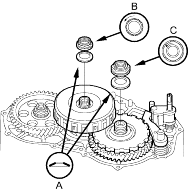
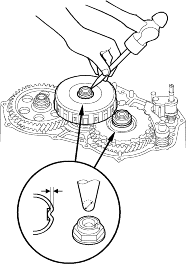
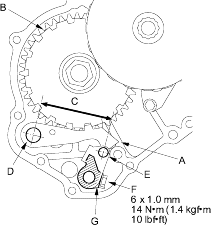

- Lubricate the threads of both shafts, the new locknuts and the new conical spring washers with ATF.
- Install the new conical spring washers (A) in the direction shown and install the new mainshaft locknut (B) and the new countershaft locknut (C).

- Tighten the countershaft locknut to 103 Nm (10.5 kgf/m, 75.9 lbf/ft) and tighten the mainshaft locknut to 78 Nm (8.0 kgf/m, 58 lbf/ft).
NOTE:
- Use a torque wrench to tighten the locknuts.
Do not use an impact wrench. - Countershaft and mainshaft locknuts have left-hand threads.
- Remove the special tool from the mainshaft.
- Stake both locknuts into the shafts with a 3.5 mm punch.

- Set the park lever in P.gif position, then verify that the park pawl (A) engages the park gear (B).

- If the park pawl does not engage fully, check the distance (C) between the pawl shaft (D) and the park level roller pin (E) (see page 14-174).
- Tighten the lock bolt (F) and bend the lock tab of the lock washer (G) against the bolt head.